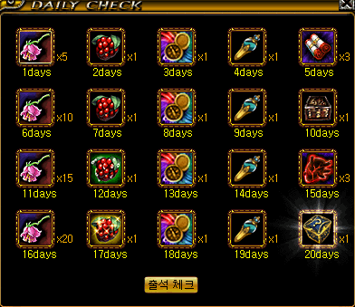
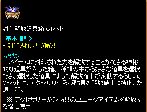
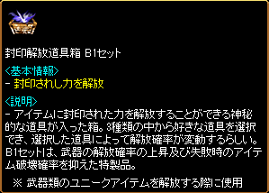
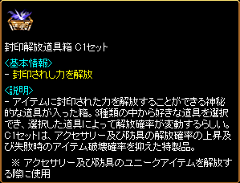

韓国限定特殊アイテム
| カップルリング テマヌエルの保管箱/バルラレルの保管箱/バイルの保管箱 グロウポータル・スフィアー マファスの箱 祈りのカケラの箱 復帰者専用課金アイテム 秘密ダンジョンバッジ |
超越パワーキット 封印解放道具箱Bセット/Cセット オプション魔法のお守り 大スター指輪 クリーチャー鍛錬の結晶 古い遺物用のふいご |
カップルリング
 |
課金アイテム カップルリングを持つペア相手のもとへ移動することができます。 複数所持することも可能なので、コル天使代わりに利用されています。 |
テマヌエルの保管箱/バルラレルの保管箱/バイルの保管箱
ログインスタンプの20日目報酬のミステリーBOX

 |
新鮮なパインベリー 神獣の餌壺（ミニペットの餌） テマヌエルの保管箱 バルラレルの保管箱 バイルの保管箱 などが出現します。 |
 |
天上界の報酬をランダムで獲得 |
 |
地下界の報酬をランダムで獲得 |
 |
赤い悪魔の報酬をランダムで獲得 |
グロウポータル・スフィアー
 |
コスミック・ポータル・スフィアーに、一日クエスト1回追加と、特殊装備商人でのユニークアイテムレンタルを1Gで利用できる機能が追加された課金アイテム。 ※1キャラクターでのみ使用可能 ※銀行保管不可、破壊不可 |
| アイテム | 有効期間 | 価格 | |
|---|---|---|---|
| グロウポータル・スフィアー[7日] | 7日 | 3900ウォン | |
| グロウポータル・スフィアー[14日] | 14日 | 8200ウォン | |
| グロウポータル・スフィアー | 30日 | 17600ウォン | |
マファスの箱
 |
韓国版ロトボックスに相当する課金アイテム （800ウォン） 出現アイテム ・究極のユニークアイテムチケット ・マファス・ベリー ・神獣の餌壺（ミニペットの餌） ・ソルの叫び ・ファーストヒールポーション ・パーティー完全復活巻物 ・マファス・スフィアー ・不思議な紺碧の壺 |
 |
ポータル・スフィアーに移動速度と最大HP増加の機能が追加。 有効期間3日 また、マファス・ベリー（狩りでの獲得経験値 30分間 120％ 増加）を収穫できる。 |
祈りのカケラの箱
 |
祈りのカケラがランダムで1〜3個出現する 取引可能 各種イベントで入手可能 |
復帰者専用課金アイテム
 |
ポータル・スフィアーにさらに経験値100％増加が追加された復帰者専用課金アイテム 有効期間 30日 1万2900ウォン |
 |
復帰者専用秘密ダンジョンバッジ 有効期間 15日 5900ウォン |
 |
復帰者専用ベリー 他のベリーと効果が重複適用可能 3000ウォン/5個 |
 |
どこでモールでいつでも購入可能です。 |
秘密ダンジョンバッジ
 |
お手伝い用バッジ 有効期限15日 1100ウォン |
 |
挑戦の冒険家バッジの上位版 有効期限3日 5900ウォン |
 |
挑戦の冒険家バッジの最上位版 有効期限3日 8900ウォン |
超越パワーキット （一部実装済）
※2017年9月6日アップデートで1〜3次転生用[3時間版]のみ実装されました。
ポータルパワーキット（経験値200％増加）をさらに強力にした「経験値300％増加」する0〜3次転生者専用の課金アイテムです。
4次転生者やLv900以上では使用できません。
また、既存のポータルパワーキットと超越パワーキットの効果は重複しません。
2つ同時に使用した場合、既存のポータルパワーキットの効果のみが適用されます。

| 使用可能Lv | 使用可能転生回数 | 課金アイテム | 価格 |
|---|---|---|---|
| Lv900未満 | 未転生 | ０回目超越パワーキット[3時間] | 3000ウォン |
| ０回目超越パワーキット[1日] | 5000ウォン | ||
| 1次転生 | 1回目超越パワーキット[3時間] | 3500ウォン | |
| 1回目超越パワーキット[1日] | 5500ウォン | ||
| 2次転生 | 2回目超越パワーキット[3時間] | 4000ウォン | |
| 2回目超越パワーキット[1日] | 6000ウォン | ||
| 3次転生 | 3回目超越パワーキット[3時間] | 4000ウォン | |
| 3回目超越パワーキット[1日] | 6000ウォン |
封印解放道具箱Bセット/Cセット
奇妙な紫苑の壺の第二形態モンスター討伐時に獲得できる紫苑の宝石箱から、以下の練成・解放関連アイテムが出現します。
 |
錬成の成功確率100％ 高確率で封印されたオプション4個が付加 |
 |
武器専用の封印解放道具箱 解放の成功確率上昇 |
|  |
防具専用の封印解放道具箱 解放の成功確率上昇 |
|  |
武器専用の封印解放道具箱 解放の成功確率上昇 解放失敗時のアイテム完全破壊確率低下 |
|  | 防具専用の封印解放道具箱 解放の成功確率上昇 解放失敗時のアイテム完全破壊確率低下 |
オプション魔法のお守り
 |
一時期日本で話題になった未実装オプションが付与されたアイテムがドロップする不具合の元になった韓国イベント限定のアイテム。 |
 |
聖火イベントで配布されたオプション魔法のお守り 成功率100％で驚愕のオプションが付加されたアイテムが量産されました。 |
 |
ハードフィスト 力 +1/レベル 2 ダメージ +200％ 攻撃速度 +50％ |
 |
シャークフィン ダメージ +200％ 攻撃速度 +55％ ダメージ +200％ |
 |
ドレイクプルーム 力 +1/レベル 2 最大HP +100％ 運 +1/レベル 2 |
 |
ブレイブシュート[Nx] 敏捷 +2/レベル 3 敏捷 +1/レベル 3 敏捷 +1/レベル 3 |
 |
ブレイブバトルアックス[Nx] 力 +2/レベル 3 健康 +2/レベル 3 |
大スター指輪
 |
大スター バトルリング リトルウィッチ スキルレベル +4 通常、指輪にスキルは付加しませんが 韓国では大スター指輪がドロップします。 |
クリーチャー鍛錬の結晶 （一部実装済）
※アイテムハンター（2017年9月27日〜10月11日）の抽選アイテムとして、クリーチャー鍛錬の結晶(大)のみ実装されました。
 |
クリーチャー鍛錬の結晶（小） ネフォンクリーチャーの経験値を少し上げる。 各種イベントで入手可能、取引可能。 |
| ネフォンクリーチャーの餌 | 獲得経験値 | |
|---|---|---|
| 発火石 | 5 | |
| 断熱石 | 5 | |
| 修復済みタティリス遺跡の出土品 | 80 | |
| 結晶石 | 150 | |
| 共鳴石 | 150 | |
| 神秘の石 | 170 | |
| ※韓国限定※ クリーチャー鍛錬の結晶（小） | 500 | |
| ※韓国限定※ クリーチャー鍛錬の結晶（中） | ？ | |
| 炎の石 | 600 | |
| 異界の強化石 | 1300 | |
| クリーチャー鍛錬の結晶(大) | 2000 | |
古い遺物用のふいご （実装済）
※2017年11月15日ロトボックスリニューアルにて、プレミアムロトボックスから出現するアイテムとして実装されました。
 |
ブラックファイヤー遺物の称号作成時に、補助アイテムをセットするスロットがあります。 韓国では、このスロットにセットする課金アイテムが販売されています。 |
 |
古い遺物用のふいご ※遺物エンチャント時の成功確率を上昇させる。 2500ウォン |
 |
[遺物]色褪せ鎧[Nx] に古い遺物のふいごを使って称号作成 |
 |
運固定 [遺物]色褪せ鎧[Nx] 運固定 110 |